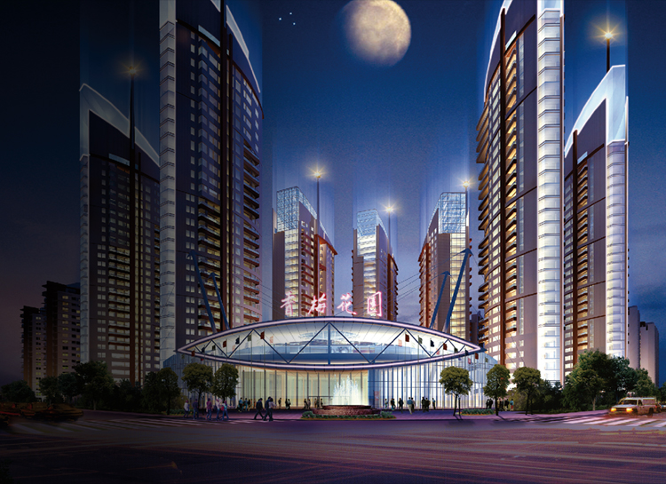
香梅花园
蜚声海内外的杰作
- •香梅花园的灵感，产生于高迪安集团董事长顾先生与陈香梅女士的巧遇奇缘。
- •顾先生受到华人侨界领袖陈香梅女士的人文情怀影响，特此将2002年打造的国际社区命名为“香梅花园”，且得到了陈香梅女士的高度认可并亲笔题名。
- •香梅花园位于上海浦东新区世纪公园旁的国际化生态社区，总建筑面积38万多平方米，紧邻浦东新区行政中心、东方艺术中心、上海科技馆等流公共配套，是世纪公园板块的标志性高档住宅项目。
- •迄今为止，香梅花园也是浦东少有的国际性生态豪宅。
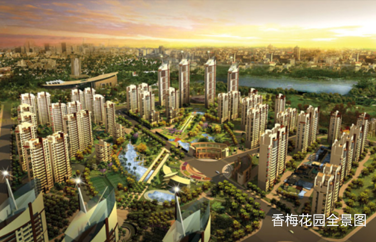
香梅花园
"空中别墅"
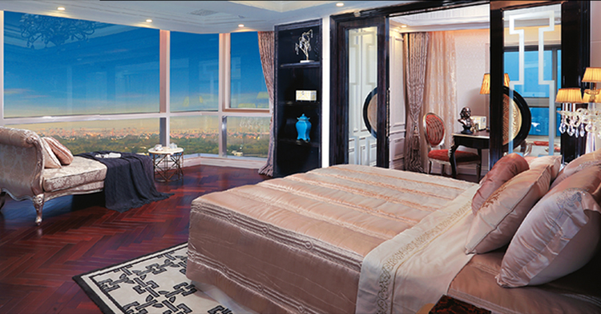
百达翡丽级的豪宅
- •香梅花园空中别墅，正对世纪公园全景，建筑面积1000平方米， 一二层超大观景露台，以昂贵的水晶玻璃特制防护栏，坚买可靠却若有若无，完美俯瞰陆家嘴和世纪公园的无故美景。
- •产品由国际著名设计行业翘楚JZC先生巨擘描绘，大量采用名贵进口石材铺设意大利“黑金花”勾镶，“威尼斯金”造型，“罗曼金”拼花，“梦幻金”地面勒条，更有西班牙莎安娜、伊朗米黄、埃及凯撒灰、意大利蒙娜丽莎一一豪华联袂，相辉相映，精湛每寸…..
- •该产品高度稀缺，如可世代珍藏的百达翡丽，占据城市豪宅的价值制高点，被誉为“世纪公园第豪宅”。
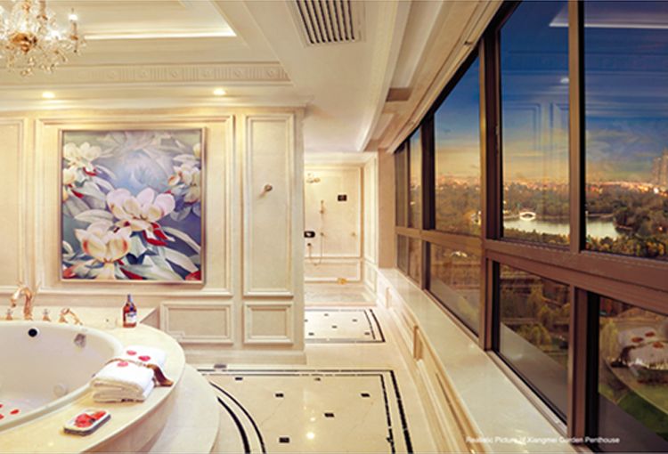
献给世界的卢浮宫
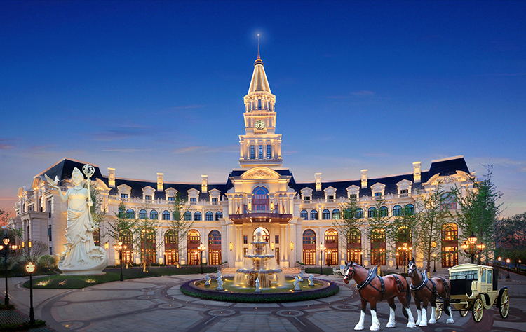
- •2014年，经过3年多打磨与细致开发，御珑宫廷荣耀开盘。
- •纯古典法式风格结合现代建筑打磨工艺，融合东西方建筑的精华，结合庄重大气的空间设计，精致高贵的内部装潢，考究用材和细节雕琢，缔造出如法兰西宫殿般的上乘大作，完美呈现东西文化与人文艺术兼容的建筑理想。
- •法式建筑的上海情缘及其惟妙惟肖的细节感，充分体现了集团人文地产对细节处追求唯美、精准、人文化表现的要求。
- •项目规划上，别墅群与公寓的布局搭配，多种产品形态风格的结合，形成个错落有致的建筑群。下沉式庭院设计，将地上风景引入地下，打造唐镇露德国际住区最值得收藏的城市别墅。
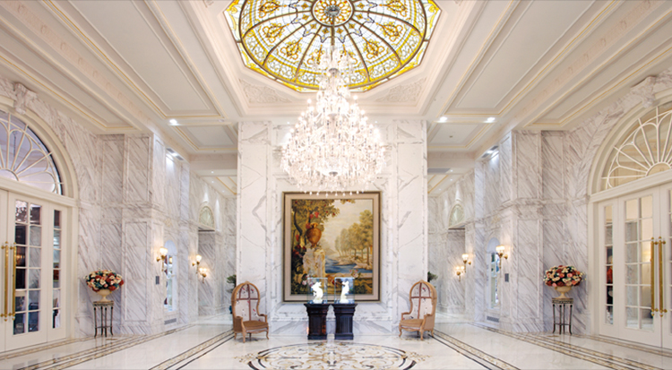
御珑宫廷
(上海)
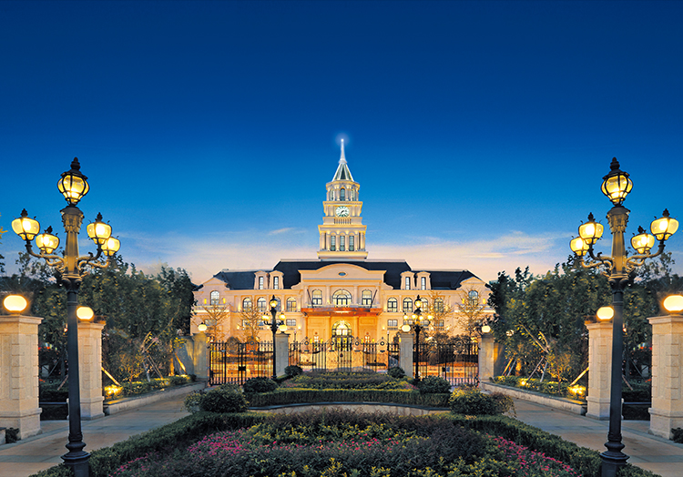
献给世界的卢浮宫
- •目前在售的御珑宫廷位于——上海浦东唐镇，纯古典法式风格，打造别墅、大平层产品。项目将东西方建筑精华完美融入其中，结合庄重大气的空间设计，精致高贵的内部装潢，考究用材和细节雕琢，完美呈现东西文化艺术兼容的建筑理想。
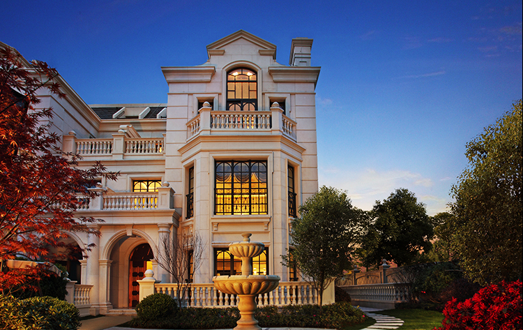
御珑宫廷
(昆山)
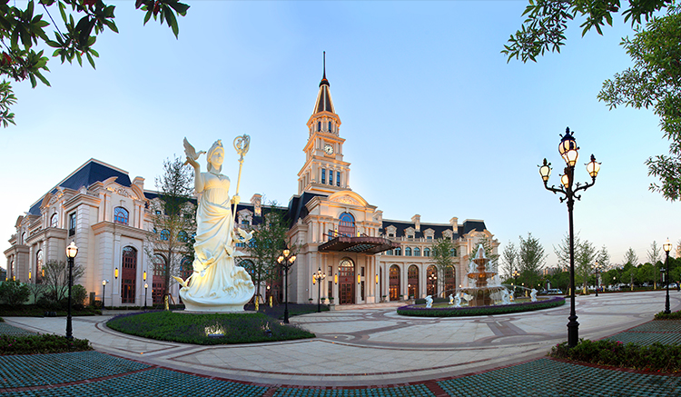
献给世界的卢浮宫
- •御珑宫廷(昆山)坐落于上海的后花园江苏省昆山市西部，距上海市中心高铁仅需18分钟，距阳澄湖约10公里。
- •御珑宫廷(昆山)总占地面积为20万平方米，总建筑面积为30万平方米，容积率为1.2。将东西方建筑精华完美融入其中，结合庄重大气的空间设计，精致高贵的内部装潢，考究用材和细节雕琢，完美呈现东西文化艺术兼容的建筑理想。
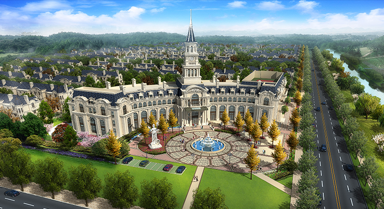
御珑宫廷世界名人廊
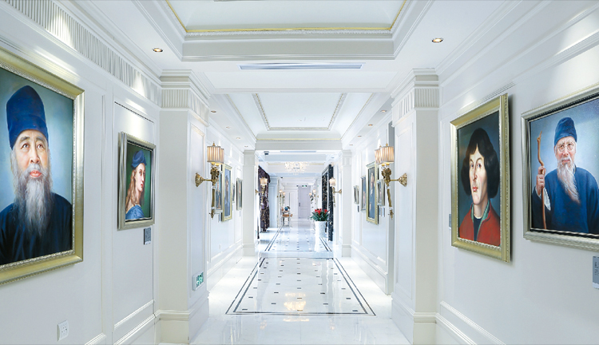
人文精神的呈现
- •对于现在买豪宅的人群来说，买的早已不是处住所，更多的是看重其文化氛围及生活方式。
- •高迪安始终将人文艺术融合在建筑中。为了满足高端人士对文化、艺术的追求，邀请知名画家，为古今中外近百位世界级文化名人作画，如爱因斯坦、莫扎特、达芬奇、梵高等，并将画作展示于御珑宫俱乐部的长廊里。
- •这些画像不仅具有艺术价值，更重要的是他们背后都有打动世人的精彩故事以及动人心弦的伟大思想，这些故事在孩子的心中播下个种子，渐渐地就会在他们的人生观、价值观中开花结果。
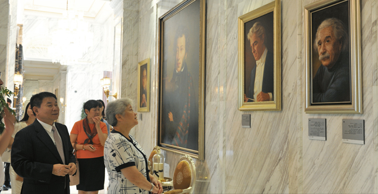
香梅和平御园
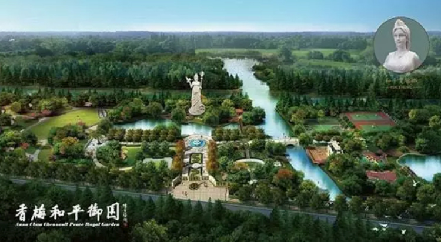
法式皇家园林风范
- •2012年起建，2014年4月基本落成。项目位于浦东唐城·露德国际社区，占地面积4万方，纯法式皇家园林。
- •该园获得陈香梅女士亲笔题名，作为支持城市公共绿地的服务与配套建设，融入高迪安国际独创“文化艺术瑰宝”元素。
- •香梅和平御园，以其独有的文化内涵和艺术氛围，汇聚了更多优质的国际化教育资源，激发孩子们丰富的想象力和创造力，为孩子未来的发展提供放飞梦想的自由空间。
金泉宫（建设中）
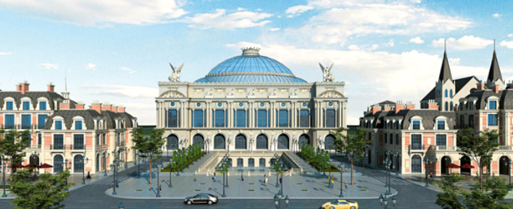
国家级休闲度假新地标
- •项目位于成熟的华夏国际旅游度假区，毗邻建设中的上海国际旅游度假区——迪士尼乐园、奥特莱斯项目。
- •区域内拥有林克司18洞高尔夫球场、外商休闲社区、海鲜美食街、海滨浴场等多层次休垌娱乐项目，未来还有2平方公里土地将用于文化旅游项目的开发建设，区域市场发展前景不可估量。
- •高迪安凭借前瞻眼光，于此布局超10万平方米的新地标项目。以世界级标准，国际团队规划，大手笔引进国际知名品牌管理公司，打造金泉宫——这一沪上独具格的度假综合体，将配备集文化、娱乐、休垌、购物于体的体验式商业玩乐街，以及高端海鲜味特色的餐饮厂场。